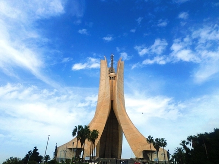

Mémorial du Martyr

Le Mémorial du Martyr, plus connu sous le nom de Maqam Echahid (مقام الشهيد) est un des principaux monuments d’Algérie. Du haut de ses 92 mètres de hauteur, c’est une des constructions les plus hautes du pays. Il fut inauguré le 5 juillet 1982 à El Madania sur les hauteurs d’Alger à l’occasion des 20 ans de l’indépendance de l’Algérie, en mémoire des combattants de la guerre d’indépendance de 1954 à 1962. Ce monument emblématique, conçu par le peintre et directeur des Beaux-Arts d’Alger Bachir Yellès, le calligraphe Abdelhamid Skander et le sculpteur polonais Marian Konieczny, représente le rayonnement de l'Algérie et renforce l'indentité Algérienne. Le mémorial du Martyr est composé de trois palmes, représentant les trois époques de l'histoire de l'Algérie : la résistance, le combat et l'indépendance. Vous pourrez trouver au pied du monument la flamme éternelle, ainsi qu'une crypte, un amphithéâtre et un musée souterrain.
 Autres Lieux
Autres Lieux